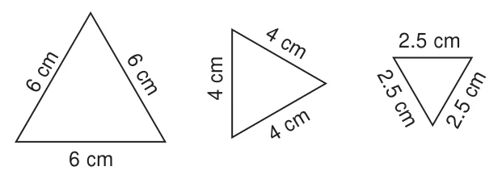
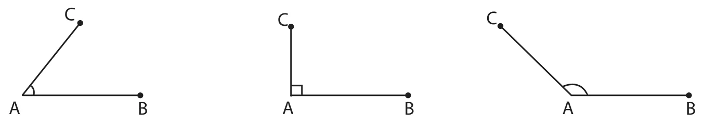
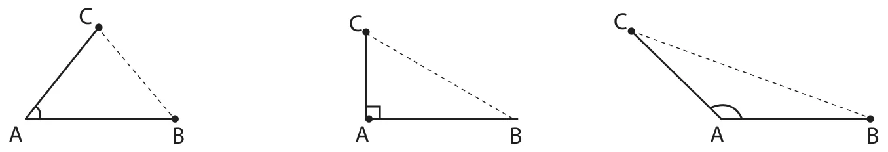
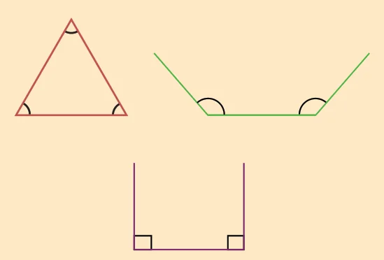
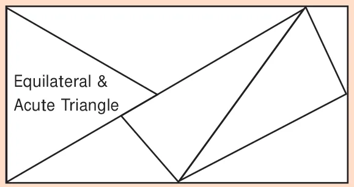
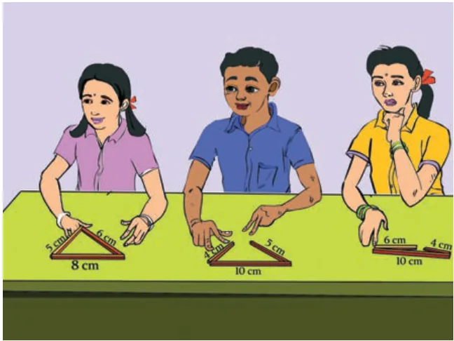
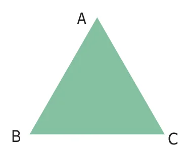
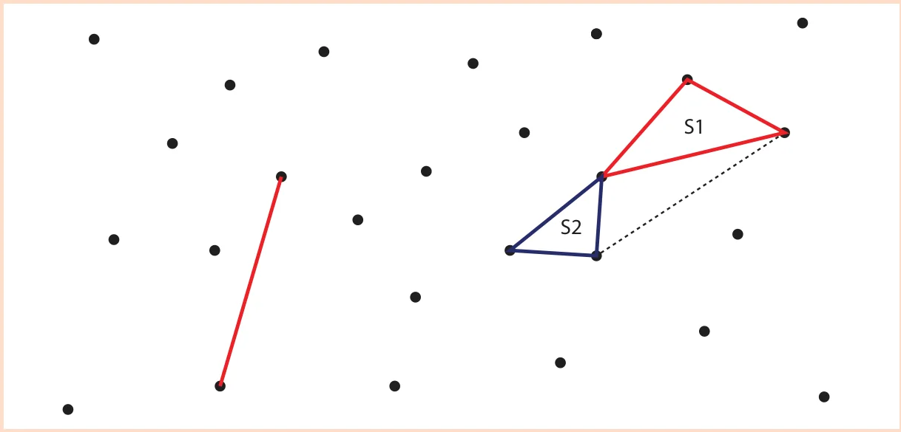

Some triangles are drawn in the dotted sheet. Try to draw as many triangles as you can. Then, measure the sides and angles of all triangles and fill the table given below

From the table, we observe the following:
In a triangle,
- If the measure of all angles are different, then all sides are different.
- If the measure of two angles are equal, then two sides are equal.
- If the measure of three angles are equal, then three sides are equal and each angle measures \(60^{\circ}\).
- Sum of three angles of a triangle is \(180^{\circ}\).

4.3.1 Types of triangle based on its sides
- If three sides of a triangle are different in lengths, then it is called a Scalene Triangle
Examples:

- If any two sides of a triangle are equal in length, then it is called an Isosceles Triangle
Examples:

- If three sides of a triangle are equal in length, then it is called an Equilateral Triangle
Examples:

Thus, based on the sides of triangles, we can classify triangles into 3 types.

4.3.2 Types of triangle based on its angles
Write the given angles as acute, obtuse or right angle formed by two line segments AB and AC

\(\angle A\) is \(\underline{\qquad\qquad}\) \(\quad\) \(\angle A\) is \(\underline{\qquad\qquad}\) \(\quad\) \(\angle A\) is \(\underline{\qquad\qquad}\)
Now, join the third side to form a triangle in each case and identify the kinds of angles and list them down.

\(\angle A\) is \(\underline{\qquad\qquad}\) \(\quad\) \(\angle A\) is \(\underline{\qquad\qquad}\) \(\quad\) \(\angle A\) is \(\underline{\qquad\qquad}\)
\(\angle B\) is \(\underline{\qquad\qquad}\) \(\quad\) \(\angle B\) is \(\underline{\qquad\qquad}\) \(\quad\) \(\angle B\) is \(\underline{\qquad\qquad}\)
\(\angle C\) is \(\underline{\qquad\qquad}\) \(\quad\) \(\angle C\) is \(\underline{\qquad\qquad}\) \(\quad\) \(\angle C\) is \(\underline{\qquad\qquad}\)
Now carefully look at these three triangles,
- If three angles of a triangle are acute angles (between \(0^{\circ}\) and \(90^{\circ}\)), then it is called an Acute Angled Triangle.
Examples:

- If an angle of a triangle is a right angle (\(90^{\circ}\)), then it is called a Right Angled Triangle.
Examples:

- If an angle of a triangle is an obtuse angle (between \(90^{\circ}\) and \(180^{\circ}\)), then it is called an Obtuse Angled Triangle.
Examples:

Thus, based on the angles of triangles, we can classify triangles into 3 types.

Do you know?
A triangle can have three acute angles, but cannot have more than one right angle or an obtuse angle.

Activity
In the given figure, there are some triangles. Measure their sides and angles and name them in two ways. (One is done for you!)

4.3.3 Triangle Inequality property
Think about the situation:

Three students Kamala, Madhan and Sumathi are asked to form triangles with the given sticks of measure 6cm, 8cm, 5cm; 4cm, 10cm, 5cm and 10cm, 6cm, 4cm respectively. All of them try to form a triangle. While Kamala, the first girl is successful in forming a triangle, Madhan and Sumathi, next to Kamala are struggling. Why?
When they are trying to join the ends of the two smaller sticks, they find that the two smaller sticks coincide with the longer stick or shorter than the longer stick and they are unable to form triangles. From this, they understand that,
To form a triangle the sum of two smaller sides must be greater than the third side. Thus,
Note
If three sides are equal in length, then definitely a triangle can be formed
In a triangle, the sum of any two sides is greater than the third side. This is known as Triangle Inequality property.
\(AB + BC > CA\)
\(BC + CA > AB\)
\(CA + AB > BC\)

Do you know?
If any two sides of the triangle are given, then the length of the third side will lie between the difference and sum of the lengths of two given sides.
Example 1: Can a triangle be formed with 7 cm, 10 cm and 5 cm as its sides?
Solution: Instead of checking triangle inequality by all the sides in the triangle, check only with two smaller sides.
Sum of two smaller sides of the triangle \(= 5+7=12\text{ cm} > 10\text{ cm}\), the third side.
It is greater than the third side.
So, a triangle can be formed with the given sides.
Example 2: Can a triangle be formed with 7 cm, 7 cm and 7 cm as its sides?
Solution: If three sides are equal, then definitely a triangle can be formed, as the triangle inequality is satisfied.
Example 3: Can a triangle be formed with 8 cm, 3 cm and 4 cm as its sides?
Solution: The sum of two smaller sides \(= 3+4=7\text{ cm} < 8\text{ cm}\), the third side.
It is less than the third side.
So, a triangle cannot be formed with the given sides.

Example 4: Can a triangle be formed with the angles \(80^{\circ}, 30^{\circ}, 40^{\circ}\)?
Solution: In a triangle, the sum of three angles is \(180^{\circ}\).
Here, the sum of three angles \(= 80^{\circ}+30^{\circ}+40^{\circ} = 150^{\circ}\) (not equal to \(180^{\circ}\))
So, a triangle cannot be formed with the given angles.
Think
Can the difference between two larger sides be less than the third side?
Activity
A triangle game : In each turn a student must draw one line connecting two dots. A line should not cross other lines or touch other dots than the two that are connected to. If a student closes a triangle with his line then he gets a point. Once there are no more lines that can be drawn the game is over and the student who gains more points wins the game.

Think
In a right angled triangle, what measures can the other two angles have?